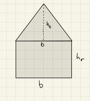

Funktioner#
För att kunna skapa större och mer komplexa program är funktioner viktigt att använda för tydlighe, struktur och simplicitet. Funktioner kan vara lite svårt att komma igång med men de är helt nödvändiga vid större projekt.
Skapa funktioner#
För att skapa en funktion börjar man likt en variabel med att deklarera den.
def namn(x, y, z):
# Fyll på med koden här.
return svar
Alltid när en ny funktion ska skapas påbörjas det med def, sedan kommer namnet av definitionen namn. Namnet väljer man helt själv med precis som för variabler så ska funktioner deklareras med rimliga och förklarande namn som passar situationen.
Exempelvis om man vill skapa en funktion som räknar ut summan mellan två tal så skulle funktionsnamnet kunna vara summa.
Efter funktionens namn kommer parametrarna som funktionen behöver använda för att kunna ge tillbaka ett funktionsvärde. I matematiken är vi vana med att en funktion tar ett input-värde (vanligtvis x) och sen får man funktionsvärdet som svar. En funktion i programmering fungerar på liknande sätt, funktionen tar ett antal parametrar och ger tillbaka ett funktionsvärde, i funktionen ovan är parametrarna skrivna med x, y och z samt separerade med ett komma mellan dem.
I exemplet tidigare om funktionen summa hade det varit rimligt med två parametrar för att kunna ge ett svar. Vi skulle kunna kalla parametrar för tal1 och tal2 inom parentesen.
I slutet kan funktionen även ge en output (alltså ett funktionsvärde) genom att ge tillbaka ett värde. Då behöver funktionen avslutas med en return-sats. Funktionen i sig behöver inte ha en return-sats utan funktionen kan ibland exempelvis skriva ut någonting direkt med hjälp av en print-sats.
För att exemplifiera hur en hel funktion ser ut ska vi skriva hur hela funktionen summa kan se ut.
def summa(tal1, tal2):
totalt = tal1 + tal2
return totalt
Anropa funktioner#
Efter att funktionen är definierade kan man använda funktionen genom att skriva:
summa(5, 7)
Att använda en funktion kallas ofta för att anropa en funktion.
Funktionen kommer använda parametrarna 5 och 7 för att beräkna vad svaret blir och sedan returnera (ge svaret) 12. I fallet ovan lagrar vi inte värdet i någon variabel så därför skulle ingenting hända om vi körde koden. Om vi vill se resultatet av koden kan vi lagra värdet i en variabel eller så kan vi direkt skriva ut resultatet av beräkningen med hjälp av en print-sats.
print(summa(5, 7))
Tips
Kopiera både funktionen och print-satsen, kör den och se resultatet!
Exempel på funktioner#
För att förstå funktioner ännu bättre kan vi titta på ett till exempel. Exempelvis om vi vill beräkna medelvärde av en lista så kan vi göra det genom en funktion. Vi börjar med att deklarera en lista med tal som vi sen ska ta medelvärdet av:
tal_lista = [3, 2, 7, 11, 12]
Efter det skapar vi en funktion som beräknar medelvärdet.
def medel(lista):
summa = 0
for tal in lista:
summa += tal
return summa / len(lista)
För att sedan anropa funktionen och skriva ut resultatet skriver vi direkt:
print(medel(tal_lista))
Tips
Kopiera både funktionen och print-satsen, kör den och se resultatet!
Flera funktioner#
När vi programmerar större program kan vi använda oss av flera olika funktioner för att kunna skapa mer sofistikerade program. Säg att vi vill räkna ut arean på en triangel och en rektangeln som bilden nedan visar.
{kind=link}
Vi delar då upp arean av bilden ovan genom att skapa en funktion för rektangeln och en area för triangeln.
def rek_area(b, h):
return b * h
Samt en funktion för arean av triangeln:
def tri_area(b, h):
return (b * h)/2
För att räkna ut summan av areorna kan vi även använda vår gamla funktion summa för att beräkna den totala arean. Ett exempel på hur man skulle kunna använda programmet kommer nedan.
# En funktion för arean av rektangeln
def rek_area(b, h):
return b * h
# En funktion för arean av triangeln
def tri_area(b, h):
return (b * h)/2
# En funktion för summan
def summa(tal1, tal2):
return tal1 + tal2
# Deklarerar basen och höjderna
basen = 30
höjden_rek = 20
höjden_tri = 25
# Beräknar areorna genom att anropa funktionerna
arean_tri = tri_area(basen, höjden_tri)
arean_rek = rek_area(basen, höjden_rek)
# Beräknar summan av rektangelns och triangelns areor
area_summa = summa(arean_tri, arean_rek)
# Skriver ut summan av båda areorna
print(area_summan)
Exemplet ovan belyser att vid större programmeringsprojekt blir det för tydlighetens skull viktigt att bryta ner problemet i mindre steg, för att sen lösa de individuella stegen med funktioner.
Videogenomgång#
Övningar till avsnittet#
Övning 6.1#
Skapa en funktion med parametrarna tal1 och tal2 som returnerar skillnaden mellan talen.
Tips
Börja med att deklarera funktionen med parametrarna tal1 och tal2. I funktionskroppen returneras skillnaden mellan talen.
Övning 6.2#
Skapa ett program som tar ett namn som parameter och sedan hälsar på användaren genom att säga Hej på dig och sen namnet.
Tips
Börja med att deklarera funktionen med parametern namn. I funktionskroppen skrivs en print-sats innehållande en hälsningsfras och sen namnet.
Övning 6.3#
Skapa en funktion som tar tre parametrar och returnerar talet som är störst
Tips
Börja med att deklarera funktionen med parametrarna a, b och c. I funktionskroppen returneras det största värdet genom att använda funktionen den inbyggda funktionen max().
Övning 6.4#
Skapa en funktion som tar en input parameter i grader Celsius c och sen skriver ut vad den temperaturen korresponderar i grader Fahrenheit f. Formeln för konverteringen från grader Celsius till grader Fahrenheit är:
\(F= \frac{9}{5} \cdot C + 32 \)
Tips
Övning 6.5#
Skapa en funktion som tittar om det nämnda året är ett skottår. Om det är skottår, skriv ut 'Skottår!' om det inte är skottår: skriv ut 'Inte skottår!'.
Tips
Börja med att deklarera funktionen med parametern år. I funktionskroppen skrivs först en if- och else-sats som bestämmer om det är skottår, inom if- och else-satsen skriv en print-sats som anger svaret.
Övning 6.6#
Skapa en funktion betyg(poäng)som tar en parameter poäng och returnerar ett betyg baserat på poängen. Listan nedan visar hur mycket poäng som ger ett särskilt betyg.
Poäng |
Betyg |
|---|---|
100 |
A |
50 |
C |
30 |
E |
Låt sedan programmet skriva ut betyget baserat på poängen. Om talet är mindre än 30 ska personen få betyget F.
Tips
Börja med att deklarera funktionen med parametern poäng. I funktionskroppen returneras betyget genom att använda en if-, elif- och else-sats
Övning 6.7#
Använd din funktion från uppgift 6.6 för att göra ett program som tar en lista med flera betyg som sedan fyller in en ny lista med betygen baserat på poängen i listan. Exempelvis kan listan se ut så här:
poäng_lista = [110, 55, 40, 0]
Då ska programmet skapa listan:
betyg_lista = ['A', 'C', 'E', 'F']
Tips
Skapa listan med hjälp av en for-loop där du anropar din funktion.
Övning 6.8#
Skapa en funktion som beräknar medianen av en lista. Skriv sedan ut vad medianen är.
Tips
Börja med att deklarera funktionen med parametern lista. För att storleksordna listan använd sorted()- metoden. Beräkna sedan hur många element som listan består av, om antalet är udda så blir det mittersta elementet medianen. Om listan består av en jämn mängd element behöver funktionen ta medelvärdet av de två mittersta värdena.
Övning 6.9#
Skriv en funktion som tar en lista av tal och returnerar det största talet. (Använd inte max())
Tips
Du kan använda en variabel som börjar med det första talet i listan och sedan jämföra varje efterföljande tal med denna variabel.
Övning 6.10#
Skriv en funktion som vänder på en lista utan att använda inbyggda funktioner som reverse().
Tips
Du kan skapa en tom lista och lägga till elementen från original-listan baklänges genom att använda en for-loop.
Övning 6.11#
Skriv en funktion som kontrollerar om ett tal är ett primtal.
Tips
Använd en for-loop för att kontrollera om talet är delbart med något tal mellan 2 och talet själv. Om det är delbart med något av dessa tal är det inte ett primtal.
Övning 6.12#
Skriv en funktion som tar en lista av tal och returnerar skillnaden mellan det största och det minsta talet.
Tips
Du kan använda max() och min() för att hitta det största och minsta talet i listan och sedan beräkna skillnaden mellan dessa.
Övning 6.13#
Skriv en funktion som tar en lista med tal och returnerar två listor: en med alla udda tal och en med alla jämna tal.
Tips
Skapa två tomma listor och använd en for-loop tillsammans med en if-else-sats för att skilja på jämna och udda tal med hjälp av %-operatorn.
Lösningar till övningar#
OBS! I videon står det uppgift 5.X. men det motsvarar numera övning 6.X.